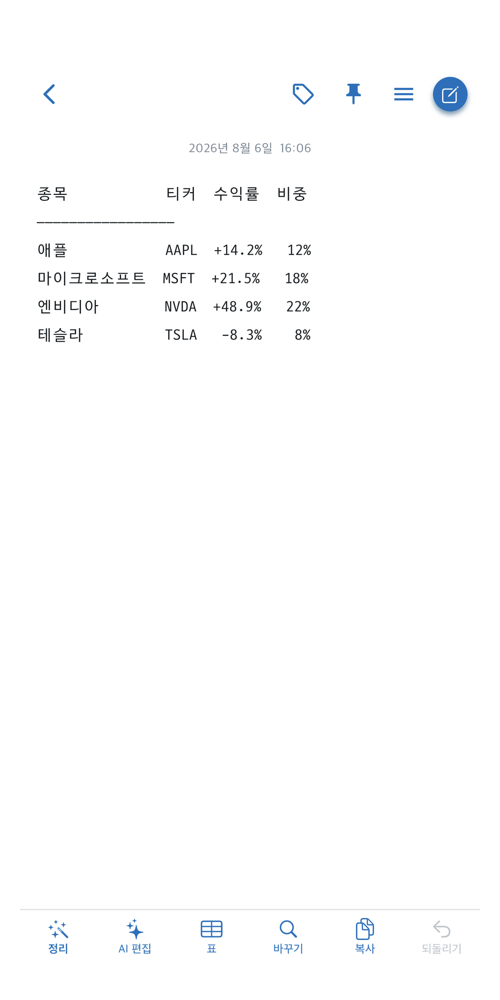
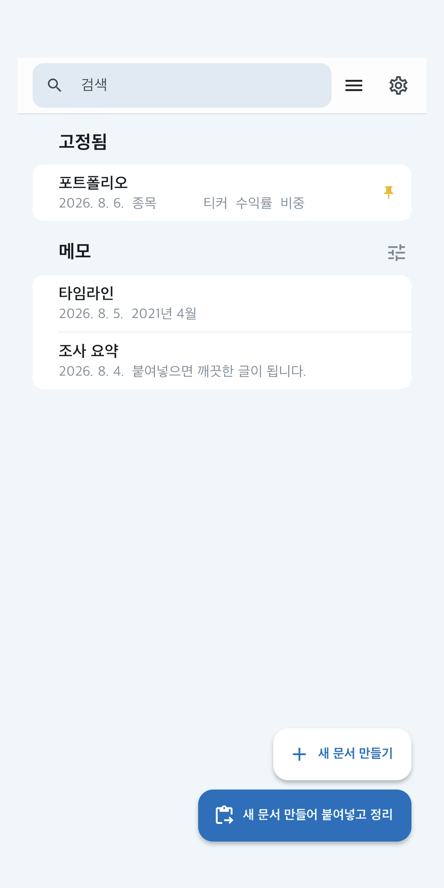
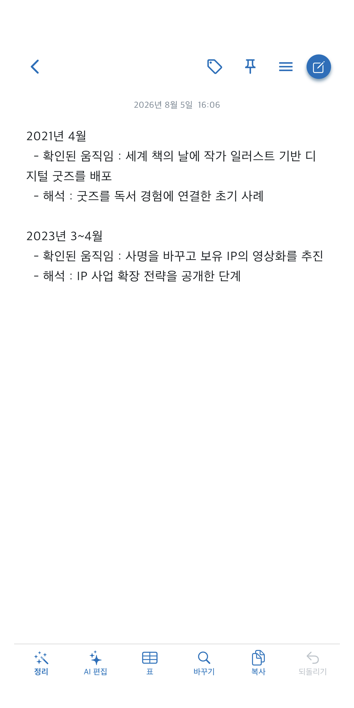

AI 답변을 붙여넣으면,
바로 쓸 수 있는 글이 됩니다.
ChatGPT와 클로드가 준 답을 그대로 어디에 붙이면, 별표와 우물 정이 따라옵니다. Skyblue Note는 그것을 한 번에 걷어내고, 깨진 표까지 되살립니다.
첫 판은 완전 무료입니다. 회원가입도, 로그인도 없습니다.



붙여넣고 정리
누르면, 이렇게 바뀝니다.
아래는 실제 앱이 하는 일입니다. 왼쪽은 AI가 준 날것 그대로, 오른쪽은 정리 단추를 한 번 누른 결과입니다.
읽지 마시고 직접 해보십시오 — 앱과 같은 엔진이 브라우저에서 그대로 돕니다.
붙여넣은 그대로
안녕하세요! 🙂 요청하신 내용을 아래와 같이 정리해 드리겠습니다. --- ## Skyblue Note 사용법 **1. 붙여넣고 정리** — 답변을 복사한 뒤 누르세요. * 별표, 우물 정, 이모지 🎉, 인사말이 걷힙니다. * 깨진 표도 같이 복구됩니다. > 표가 있는 메모는 스프레드시트로 복사됩니다. | 종목 | 티커 | 수익률 | 비중 |------|------|--------| | 애플 | AAPL | +14.2% | 12% | | 마이크로소프트 | MSFT | +21.5% | 18% | |테슬라|TSLA|-8.3%|8%|
정리 한 번
Skyblue Note 사용법 1. 붙여넣고 정리 — 답변을 복사한 뒤 누르세요. · 별표, 우물 정, 이모지, 인사말이 걷힙니다. · 깨진 표도 같이 복구됩니다. 표가 있는 메모는 스프레드시트로 복사됩니다. 종목 티커 수익률 비중 애플 AAPL +14.2% 12% 마이크로소프트 MSFT +21.5% 18% 테슬라 TSLA -8.3% 8%
기능
메모장이 아니라, 정리 도구입니다.
AI 답변을 다루는 사람에게만 필요한 것들을 넣었습니다.
깨진 표 복구
칸이 모자라거나 구분선이 어긋난 표를 알아서 맞춥니다. 앱에서 복사한 탭 구분 표도 알아봅니다.
스프레드시트로
표 단추 한 번이면 엑셀·구글 시트에 그대로 붙는 형식(TSV)으로 복사됩니다.
출처 자동 인식
붙여넣은 글의 생김새로 ChatGPT·클로드·제미나이·그록·퍼플렉시티를 가려냅니다. 실제 답변 표본으로 맞췄습니다.
되돌릴 수 있음
정리는 언제나 되돌릴 수 있습니다. 이전 판이 버전기록에 남고, 처음 붙여넣은 원본으로도 돌아갑니다.
AI 편집(선택)
직접 발급한 API 키를 넣으면 요약·번역·다듬기를 맡길 수 있습니다. 키가 없어도 정리는 전부 동작합니다.
읽기 좋은 배경
몰스킨·원고지·모눈·크라프트 같은 배경을 고릅니다. 색은 눈이 아니라 명암비로 정했습니다.
개인정보
메모는 기기 안에 있습니다.
정리는 전부 기기 안에서 이루어집니다. 인터넷이 끊겨도 동작합니다. iCloud 동기화를 켜면 본인의 애플 계정 안에서만 오갑니다 — 개발자의 서버를 거치지 않습니다. 회원가입이 없고, 계정도 없습니다.
만든 곳
EZLONG
미국 주식과 장기 투자를 다루는 도구와 글을 만듭니다. Skyblue Note는 그 과정에서 매일 쓰던 것을 앱으로 옮긴 것입니다 — AI에게 물어본 답을 어딘가에 옮겨 적을 때마다 같은 기호를 지우고 있었기 때문입니다.